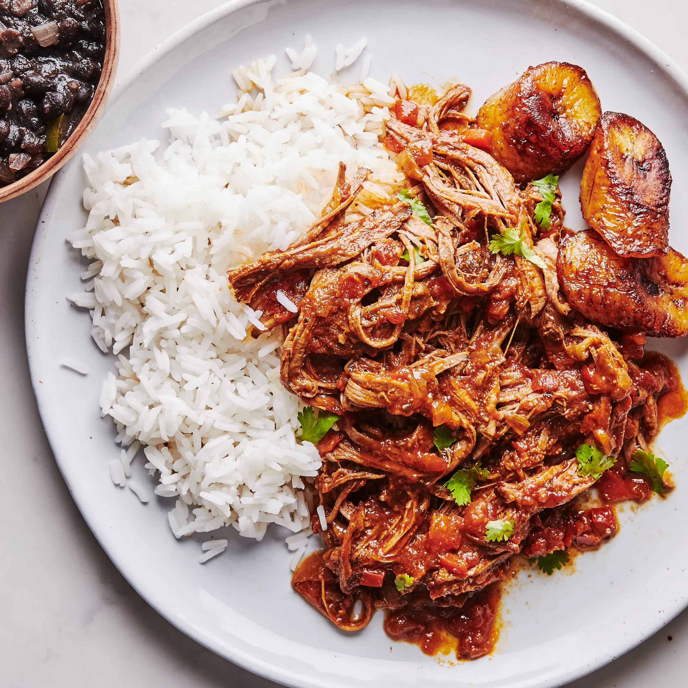

Home
Ropa Vieja

Background
Ropa vieja is a traditional Cuban dish that is made with shredded beef,
vegetables, and spices. The name "ropa vieja" translates to "old clothes"
in Spanish, which is a reference to the shredded appearance of the beef.
This dish is typically served with rice, black beans, and plantains, and
is a popular meal in many Cuban households.
Ingredients
- 2 lbs flank steak
- 1 large red onion, sliced
- 1 large green bell pepper, sliced
- 1 large red bell pepper, sliced
- 1 cup tomato sauce
- 1 1/2 cup broth
- 1/4 cup dry red wine
- 1/4 cup olive oil
- 4 cloves garlic, minced
- 1 tsp cumin
- 1 tsp oregano
- 1 tsp paprika
- 1/2 tsp salt
- 1/4 tsp black pepper
- 4 bay leaves
- 2 packs of sazon
Instructions
- Season the flank steak with salt, pepper, and garlic powder.
- Heat the olive oil in a large pot over medium-high heat.
-
Add the flank steak and sear on both sides until browned, about 3-4
minutes per side.
- Remove the steak from the pot and set aside.
-
Add the onions, bell peppers, and garlic to the pot and cook until
softened, about 5 minutes.
-
Return the steak to the pot and add the tomato sauce, broth, wine,
cumin, oregano, paprika, salt, pepper, bay leaves, and sazon.
-
Bring the mixture to a boil, then reduce the heat to low and simmer,
covered, for 2-3 hours, or until the meat is tender and shreds easily.
- Remove the steak from the pot and shred it with two forks.
-
Return the shredded meat to the pot and cook for an additional 10-15
minutes.
- Remove the bay leaves before serving.
- Serve the ropa vieja with rice, black beans, and plantains.